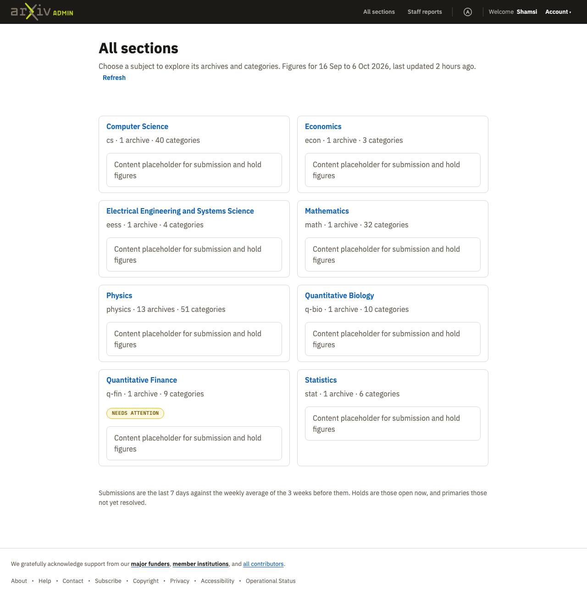
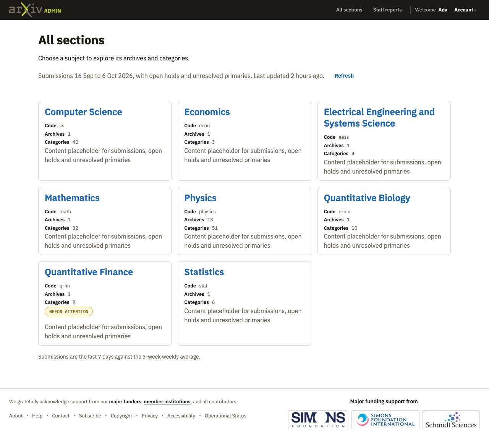
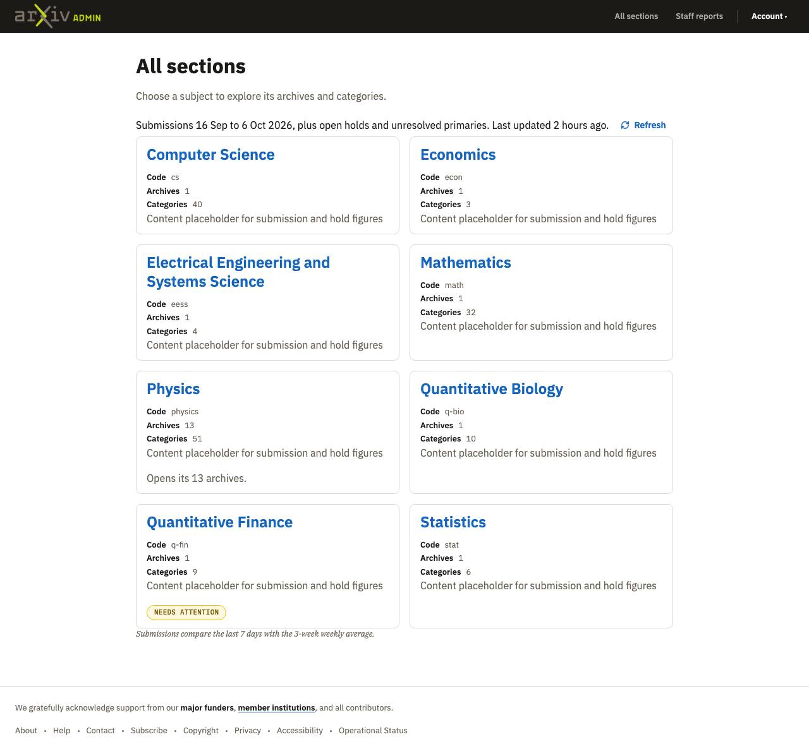
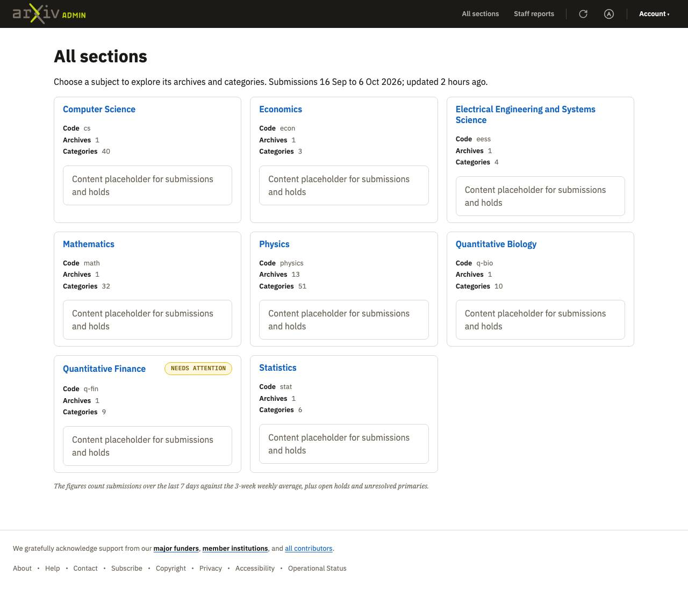
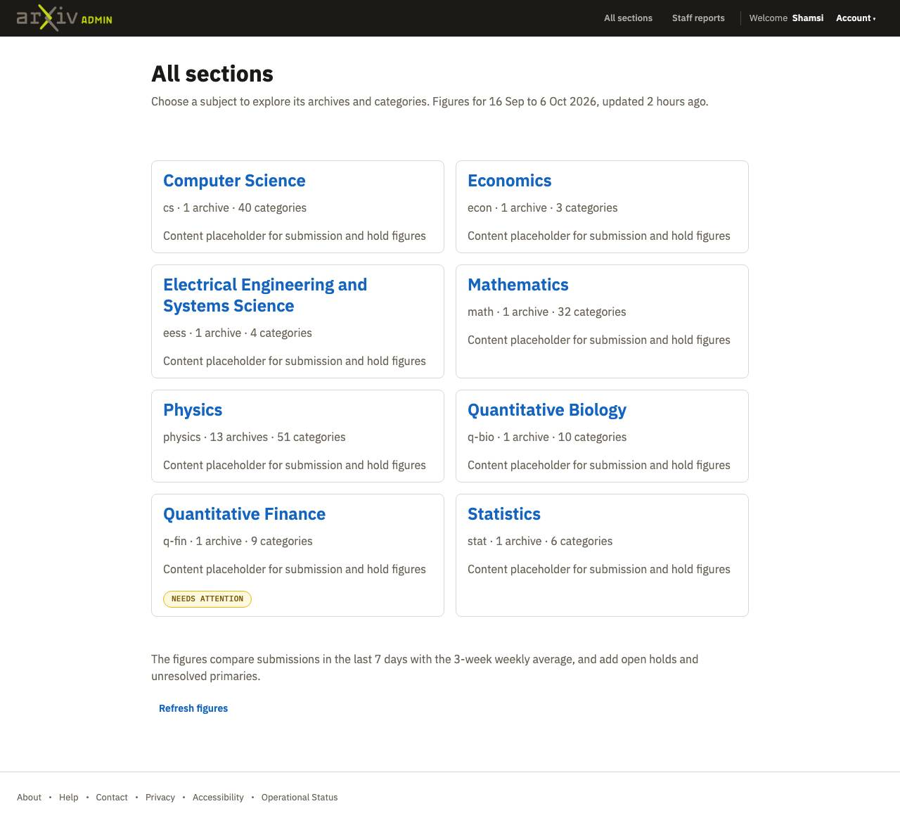
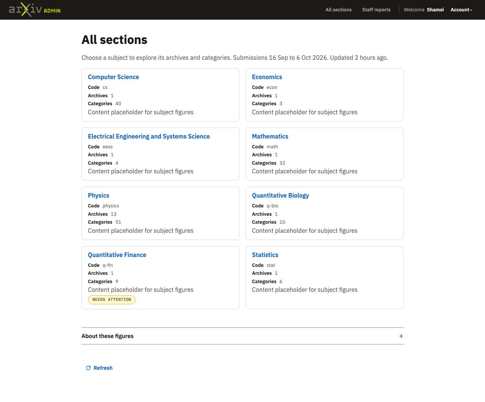
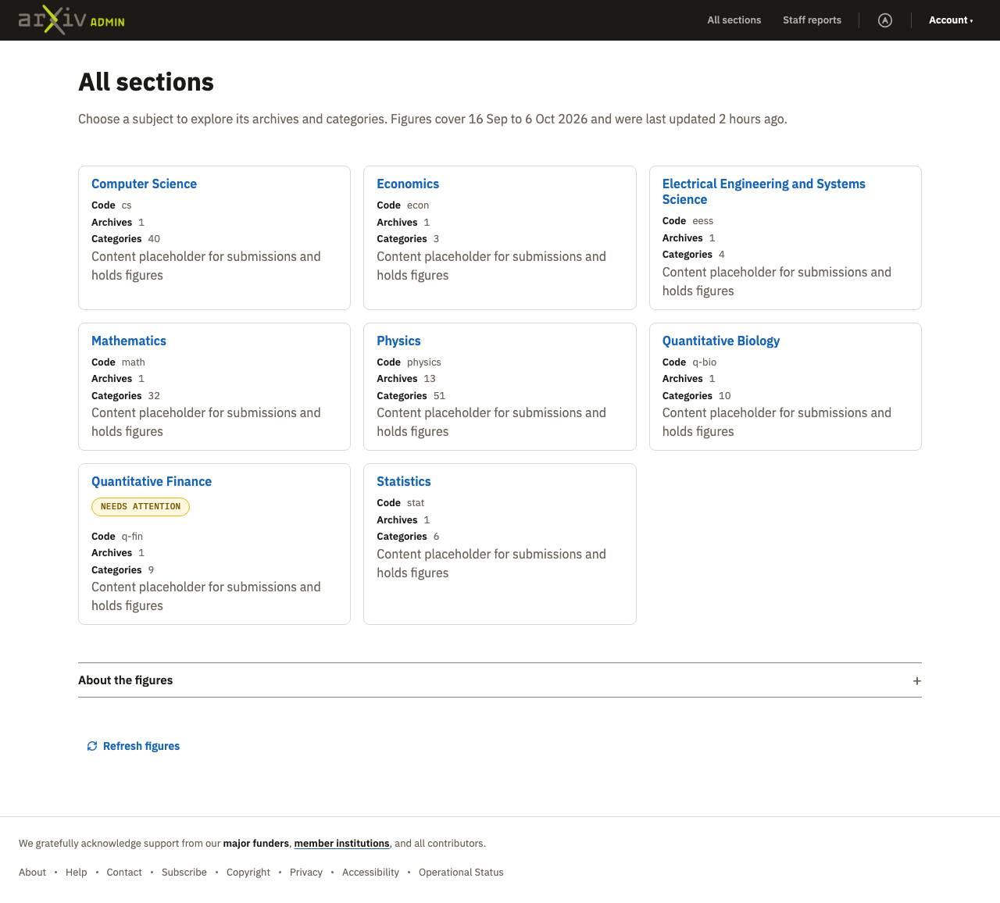
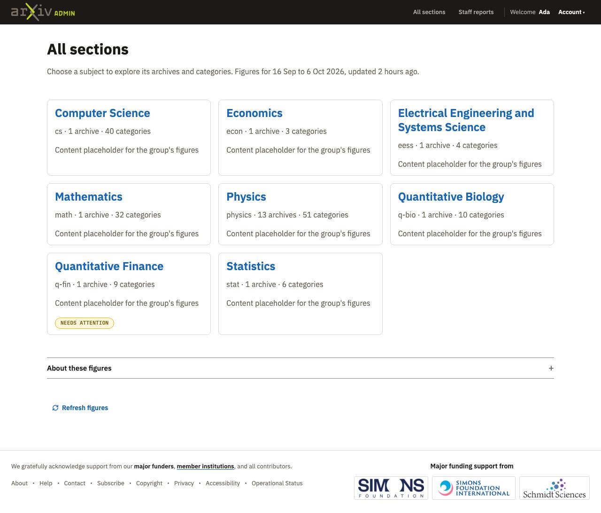

Moderation and staff reports, round 8
2026-10-13 · design system at commit 79bb9c7 · the spec
Result
Shamsi rejected all four, and noted that her standard rose as the builds improved, so verdicts no longer measure progress. No build used a sidebar, and the explanation of the figures became a footnote under the cards on all sections, both from the docs added after round 7. No build used the sort bar. The category list went behind show more (A, B), into an accordion at the bottom (C), or was left out (D); Shamsi wants the whole list tucked away and shown whole when needed. Refresh was not grouped with the updated line, and only C gave it an icon.
Builds
| Build A | Build B | Build C | Build D | |
|---|---|---|---|---|
| Model | claude-opus-5-5 | claude-opus-5-5 | claude-sonnet-5-5 | claude-sonnet-5-5 |
| Pages |  All sections (phone, dark)Activity charts (phone, dark) |  All sections (phone, dark)Activity charts (phone, dark) |  All sections (phone, dark)Activity charts (phone, dark) |  All sections (phone, dark)Activity charts (phone, dark) |
| Shamsi: verdict | Reject | Reject | Reject | Reject |
| Shamsi: what is off | ReadThe orgaization of content on the Activity Charts page, below the secondary nav and above the cards, looks off. It did not use the sort bar, and I think a 'show more' link for the categories is the wrong affordance because it gives the first categories more precendence. A better element choice would show or hide all of them. It also looks strange to have the line for categories aligned left followed by the filter and sort button, aligned right. It looks like a misalignment even though it is not. The refresh button should hav an icon and be grouped with the text about the time it was last updated. On desktop, it wraps to a second line and there is no icon, though there is a gap that makes it look like an icon was intended to go there. | ReadThe refresh button is missing an icon. On the activity charts page, the only improvement over the previous page is that the sort dropdowns are aligned left so it does not look misaligned with the list of categories. But, as in build A, I think the show more link is the wrong affordance for the categories list. And it did not use a sort bar. | ReadOn the all sections page, the icon is added to the refresh button, yay! That button should be grouped with the text about when it was last updated, though (this applies to all of the builds. maybe it is how we presented the content for the page). I am concerned about the decision to put the categories accordion at the bottom of the activity charts page. Normally this page will have a long list of visualizations so it will take a lot of scrolling to get to it. I am more and more convinced that some sort of tooltip or modal is the right solution. It is a menu that, when you need it you want to see all the options, but when you don't then you want all options tucked away. This build also did not use the sort bar. | ReadIt has no "refresh" button on the all sections page. On the activity charts page, it did not use the sort bar and left out the list of categories altogether. The accordiong for 'about these charts' is pushing the primary content down further and getting too much prominence. It is becoming clearer to me, with my human review, that there is a space for modals in this page layout. So far no agent has tried that affordance. I wonder why? |
| Claude: technical verdict | Conformant, with issues | Conformant, with issues | Conformant | Conformant, with issues |
| Claude: technical notes | ReadTwelve rules on tokens, one class with no rule; copies the show-more script; a select, a checkbox and a Sort button. | ReadEight rules on tokens; show more inline; Sort by and Order selects. | ReadTwo rules on tokens. Did not open its pages in a browser. | ReadSix rules on tokens. Left out the category list and the Refresh on all sections; Refresh moved to the header tools. |
| Cost | $2.80 · 5 min · 6 files read | $2.36 · 5 min · 6 files read | $0.78 · 3 min · 1 files read | $1.08 · 8 min · 5 files read |


Last round: Moderation and staff reports, round 7
 Build A: Accept with changes |  Build B: Reject |  Build C: Reject |  Build D: Reject |
Shamsi: notes after seeing them together
Accept/Reject is not a good measure of improvement or even of quality. My standards are changing as the builds are improving, so I am rejecting more now that earlier, even though the layouts have improved. What is the purpose of that voting mechanism for you? If it is to learn from what worked and what didnt then maybe what we need is that, on the final page showing all of the builds, I select the one that in my opinion is best and the one that is worst.
I also noticed that all of the builds treated the line on the first page about the time period as a footnote. That is great. Did the spec tell them to do that, or did they figure out that it was a lower priority piece of information because of some change to the docs?
This set of builds did not use the sort bar for some reason. Why do you think that is?
What the builds had in common
- No sidebar in any build (three of four in round 7).
- All four put the explanation of the figures in a line below the cards on all sections, following Where secondary content goes.
- No build used the sort bar. Agents said reversing needs JavaScript, or that the docs offer a Sort by select; the docs had two sort patterns and no rule for choosing, and the routing table pointed only at table headers.
- Show more on the category list in A and B came from the docs' own example ('the first eight categories').
- All four put 'About these charts' in an accordion above the list, which the docs allowed ('above it when it is one closed row').
- No build used a popover or a modal: the Modals page said a modal is not for information that does not block the reader.
- Primary content top at 1440 by 900: all sections 180 to 264px; activity charts 500 to 624px (placeholders now in cards, and the category list or sort form above them).
- Predictions: 1 right (no sidebar). 2 wrong (no sort bar). 3 partly right (the one-line note became a footnote; the chart explanation still went in an accordion). 4 not measurable: Shamsi stopped using verdicts as a measure.
What we changed in the design system
Not written yet.